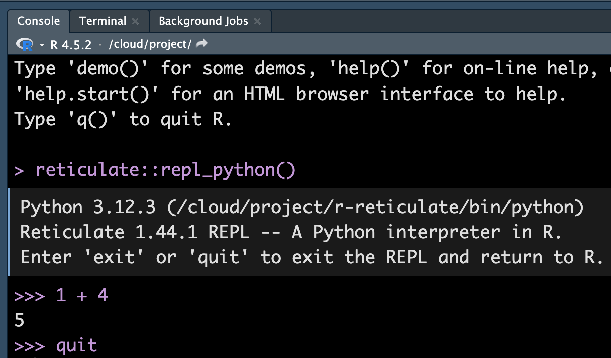

Using virtual environment '/Users/chenghanyu/.virtualenvs/r-reticulate' ...Using virtual environment '/Users/chenghanyu/.virtualenvs/r-reticulate' ...MATH/COSC 3570 Introduction to Data Science
Using virtual environment '/Users/chenghanyu/.virtualenvs/r-reticulate' ...Using virtual environment '/Users/chenghanyu/.virtualenvs/r-reticulate' ...quit or exit to switch back to R.

2 + 3 / (5 * 4) ^ 2[1] 2.015 == 5.00[1] TRUE# 5 and 5L are of the same value too
# 5 is of type double; 5L is integer
5 == 5L[1] TRUEtypeof(5L)[1] "integer"!TRUE == FALSE[1] TRUE
2 + 3 / (5 * 4) ** 22.00755 == 5.00True5 == int(5)Truetype(int(5))<class 'int'>not True == FalseTruerepl_python()
Type coercion: When doing AND/OR comparisons, all nonzero values are treated as TRUE and 0 as FALSE.
-5 | 0[1] TRUE1 & 1[1] TRUE2 | 0[1] TRUE
bool() converts nonzero numbers to True and zero to False
-5 | 0-5-5 or 0-51 & 111 and 11bool(2) | bool(0)True
Math functions in R are built-in.
# R comment
Need to import math library in Python.
import math
math.sqrt(144)12.0math.exp(1)2.718281828459045math.sin(math.pi/2)1.0math.log(32, 2)5.0abs(-7)7# python comment

character, double, integer and logical.
typeof(5)[1] "double"typeof(5L)[1] "integer"typeof("I_love_data_science!")[1] "character"typeof(1 > 3)[1] "logical"is.double(5L)[1] FALSE
str, float, int and bool.
type(5.0)<class 'float'>type(5)<class 'int'>type("I_love_data_science!")<class 'str'>type(1 > 3)<class 'bool'>type(5) is floatFalsepython long (long integers, they can also be represented in octal and hexadecimal)


c(), short for concatenate or combine.: to create a sequence of integers.seq() to create a sequence of numbers of type double with more options.
[] with element indexing.factor can be ordered in a meaningful way. Create a factor by factor().[1] med high low
Levels: high low med. . .
typeof(fac) ## The type is integer.[1] "integer"str(fac) ## The integers show the level each element in vector fac belongs to. Factor w/ 3 levels "high","low","med": 3 1 2. . .
Factor w/ 3 levels "low","med","high": 2 3 1levels(fac) ## Each level represents an integer, ordered from the vector alphabetically.
Lists are different from (atomic) vectors: Elements can be of any type, including lists.
Construct a list by using list().
Return an element of a list
## subset by name (a vector)
x_lst$idx [1] 1 2 3## subset by indexing (a vector)
x_lst[[1]] [1] 1 2 3typeof(x_lst$idx)[1] "integer"
Return a sub-list of a list
## subset by name (still a list)
x_lst["idx"] $idx
[1] 1 2 3## subset by indexing (still a list)
x_lst[1] $idx
[1] 1 2 3typeof(x_lst["idx"])[1] "list"
pepper packet pepper shaker
If list
xis a train carrying objects, thenx[[5]]is the object in car 5;x[4:6]is a train of cars 4-6.— @RLangTip, https://twitter.com/RLangTip/status/268375867468681216


dim.matrix() to create a matrix.## Create a 3 by 2 matrix called mat
(mat <- matrix(data = 1:6, nrow = 3, ncol = 2)) [,1] [,2]
[1,] 1 4
[2,] 2 5
[3,] 3 6[1] 3 2[1] 3[1] 2 [,1] [,2]
[1,] 1 2
[2,] 3 4
[3,] 5 6$dim
[1] 3 2, to separate row and column index.mat[2, 2] extracts the element of the second row and second column.mat [,1] [,2]
[1,] 1 4
[2,] 2 5
[3,] 3 6## all rows and 2nd column
## leave row index blank
## specify 2 in coln index
mat[, 2][1] 4 5 6## 2nd row and all columns
mat[2, ] [1] 2 5## The 1st and 3rd rows and the 1st column
mat[c(1, 3), 1] [1] 1 3cbind() (binding matrices by adding columns)
rbind() (binding matrices by adding rows)
When matrices are combined by columns (rows), they should have the same number of rows (columns).
data.frame() that takes named vectors as input “element”.## data frame w/ an dbl column named age
## and char column named gender.
(df <- data.frame(age = c(19, 21, 40),
gen = c("m", "f", "m"))) age gen
1 19 m
2 21 f
3 40 m## a data frame has a list structure
str(df) 'data.frame': 3 obs. of 2 variables:
$ age: num 19 21 40
$ gen: chr "m" "f" "m"## must set column names
## or they are ugly and non-recognizable
data.frame(c(19, 21, 40), c("m", "f", "m")) c.19..21..40. c..m....f....m..
1 19 m
2 21 f
3 40 mData frame has properties of matrix and list.
## rbind() and cbind() can be used on df
df_r <- data.frame(age = 10,
gen = "f")
rbind(df, df_r) age gen
1 19 m
2 21 f
3 40 m
4 10 fdf_c <-
data.frame(col = c("red","blue","gray"))
(df_new <- cbind(df, df_c)) age gen col
1 19 m red
2 21 f blue
3 40 m grayCan use either list or matrix subsetting methods.
df_new age gen col
1 19 m red
2 21 f blue
3 40 m gray## Subset rows
df_new[c(1, 3), ] age gen col
1 19 m red
3 40 m gray## select the row where age == 21
df_new[df_new$age == 21, ] age gen col
2 21 f blue age gen col
1 19 m red
3 40 m gray'data.frame': 3 obs. of 1 variable:
$ age: num 19 21 40 num [1:3] 19 21 4005-R Data Type Summary
In lab.qmd Lab 5,
Create your own R objects vector v1, factor f2, list l3, matrix m4 and data frame d5.
Check typeof() and class() of those objects, and create a list having the output below.
v1 <- __________
f2 <- __________
l3 <- __________
m4 <- __________
d5 <- __________
v_type <- c(type = typeof(v1), class = class(v1))
f_type <- c(type = __________, class = _________)
l_type <- c(type = __________, class = _________)
m_type <- c(type = __________, class = _________)
d_type <- c(type = __________, class = _________)
____(vec = v_type,
______ = ___,
______ = ___,
______ = ___,
______ = ___)$vec
type class
"double" "numeric"
$fac
type class
"integer" "factor"
$lst
type class
"list" "list"
$mat
type class1 class2
"integer" "matrix" "array"
$df
type class
"list" "data.frame" 05-R Data Type Summary
>You are a TA for my introduction to data science course. How can we create a sequence of numbers using R? Give me a short example.
>I have a R data frame: df <- data.frame(age = c(19, 21, 40), gen = c(“m”, “f”, “m”))). How do I select the column “age”, but the data frame structure is kept?
[].lst_num = [0, 2, 4]
lst_num[0, 2, 4]type(lst_num)<class 'list'>len(lst_num)3List elements can have different types!
lst = ['data', 'math', 34, True]
lst['data', 'math', 34, True]0: the 1st elementlst['data', 'math', 34, True]lst[0]'data'type(lst[0]) ## not a list<class 'str'>-1: the last elementlst[-2]34[a:b]: the (a+1)-th to b-th elementslst[1:4]['math', 34, True]type(lst[1:4]) ## a list<class 'list'>[a:]: elements from the (a+1)-th to the lastlst[2:][34, True]What does lst[0:1] return? Is it a list?
What does lst[0:1] return? Is it a list?
Lists are changed in place!
lst[1]'math'lst[1] = "stats"
lst['data', 'stats', 34, True]lst[2:] = [False, 77]
lst['data', 'stats', False, 77]If we change any element value in a list, the list itself will be changed as well.
list.method()
## Concatenation
lst_num + lst[0, 2, 4, 'data', 'stats', False, 77]## Repetition
lst_num * 3 [0, 2, 4, 0, 2, 4, 0, 2, 4]## Membership
34 in lstFalse## Appends "cat" to lst
lst.append("cat")
lst['data', 'stats', False, 77, 'cat']## Removes and returns last object from list
lst.pop()'cat'lst['data', 'stats', False, 77]## Removes object from list
lst.remove("stats")
lst['data', False, 77]## Reverses objects of list in place
lst.reverse()
lst[77, False, 'data']This is a common syntax in Python. We start with a Pyhton object of some type, then type dot followed by any method specifically for this particular data type or structure for operations. list.pop(index)
Tuples work exactly like lists except they are immutable, i.e., they can’t be changed in place.
To create a tuple, we use ().
tup = ('data', 'math', 34, True)
tup('data', 'math', 34, True)type(tup)<class 'tuple'>len(tup)4tup[2:](34, True)tup[-2]34tup[1] = "stats" ## does not work!
# TypeError: 'tuple' object does not support item assignmenttup('data', 'math', 34, True)‘tuple’ object does not support item assignment
# Converts a list into tuple
tuple(lst_num)(0, 2, 4)# number of occurance of "data"
tup.count("data")1# first index of "data"
tup.index("data")0Lists have more methods than tuples because lists are more flexible.
A dictionary consists of key-value pairs.
A dictionary is mutable, i.e., the values can be changed in place and more key-value pairs can be added.
To create a dictionary, we use {'key': value}.
The value can be accessed by the key in the dictionary.
dic = {'Name': 'Ivy', 'Age': 7, 'Class': 'First'}dic['Age']7dic['age'] ## does not workdic['Age'] = 9
dic['Class'] = 'Third'
dic{'Name': 'Ivy', 'Age': 9, 'Class': 'Third'}dic1 = {'Name': 'Ivy', 'Age': 7, 'Name': 'Liya'}
dic1['Name']'Liya'. . .
Keys are unique and immutable.
A key can be a tuple, but CANNOT be a list.
## The first key is a tuple!
dic2 = {('First', 'Last'): 'Ivy Lee', 'Age': 7}
dic2[('First', 'Last')]'Ivy Lee'## does not work
dic2 = {['First', 'Last']: 'Ivy Lee', 'Age': 7}
dic2[['First', 'Last']]{'Name': 'Ivy', 'Age': 9, 'Class': 'Third'}dic.keys() ## Returns list of dictionary dict's keysdict_keys(['Name', 'Age', 'Class']). . .
dic.values() ## Returns list of dictionary dict's valuesdict_values(['Ivy', 9, 'Third']). . .
dic.items() ## Returns a list of dict's (key, value) tuple pairsdict_items([('Name', 'Ivy'), ('Age', 9), ('Class', 'Third')]). . .
## Adds dictionary dic2's key-values pairs in to dic
dic2 = {'Gender': 'female'}
dic.update(dic2)
dic{'Name': 'Ivy', 'Age': 9, 'Class': 'Third', 'Gender': 'female'}## Removes all elements of dictionary dict
dic.clear()
dic06-Python Data Structure
In lab.qmd Lab 6,
Remember to create Python code chunk
```{Python}
#| echo: true
#| eval: false
#| code-line-numbers: false
```Any issue of this Python chunk?
Commit and Push your work once you are done.
[[1, 2, 3], 'a', [True, False]]{'idx': [1, 2, 3], 'word': 'a', 'bool': [True, False]}06-Python Data Structure
>My professor told me that Python has a data structure called “tuple”. What is it? Teach me how to create one and use it with a simple example. Then teach me how tuples are different from lists and dictionaries. Thank you.
Python built-in data structures are not specifically for data science.
To use more data science friendly functions and structures, such as array or data frame, Python relies on packages NumPy and pandas.


In your lab-yourusername project, run
library(reticulate)
virtualenv_create("myenv"). . .
Go to Tools > Global Options > Python > Select > Virtual Environments

You may need to restart R session. Do it, and in the new R session, run
library(reticulate)
py_install(c("numpy", "pandas", "matplotlib")). . .
Run the following Python code, and make sure everything goes well.
import numpy as np
import pandas as pd
v1 = np.array([3, 8])
v1array([3, 8])df = pd.DataFrame({"col": ['red', 'blue', 'green']})
df| col | |
|---|---|
| 0 | red |
| 1 | blue |
| 2 | green |
import pandas as pd
## dict (cols)
data = {'name': ['Alice', 'Bob', 'Charlie'],
'age': [25, 30, 28]}
df = pd.DataFrame(data)
## list (rows)
data = [['Alice', 25, 'New York'],
['Bob', 30, 'London']]
df = pd.DataFrame(data, columns=['name', 'age', 'city'])
## np.array
data = np.array([['Alice', 25, 'New York'],
['Bob', 30, 'London']])
df = pd.DataFrame(data, columns=['name', 'age', 'city'])
data = np.array([3,12,56,9,230,22])
type(data)<class 'numpy.ndarray'>np.mean(data)55.333333333333336np.median(data)17.0
summary(data) Min. 1st Qu. Median Mean 3rd Qu. Max.
3.00 9.75 17.00 55.33 47.50 230.00 
np.quantile(data, [0.25, 0.5, 0.75])array([ 9.75, 17. , 47.5 ])np.var(data, ddof = 1)7676.666666666666np.std(data, ddof = 1)87.61658899242008df = pd.Series(data)
df.describe()count 6.000000
mean 55.333333
std 87.616589
min 3.000000
25% 9.750000
50% 17.000000
75% 47.500000
max 230.000000
dtype: float64IQR(data)
q75, q25 = np.percentile(data, [75 ,25])
q75 - q25Delta Degrees of Freedom.
plot()
mtcars[1:15, 1:4] mpg cyl disp hp
Mazda RX4 21.0 6 160 110
Mazda RX4 Wag 21.0 6 160 110
Datsun 710 22.8 4 108 93
Hornet 4 Drive 21.4 6 258 110
Hornet Sportabout 18.7 8 360 175
Valiant 18.1 6 225 105
Duster 360 14.3 8 360 245
Merc 240D 24.4 4 147 62
Merc 230 22.8 4 141 95
Merc 280 19.2 6 168 123
Merc 280C 17.8 6 168 123
Merc 450SE 16.4 8 276 180
Merc 450SL 17.3 8 276 180
Merc 450SLC 15.2 8 276 180
Cadillac Fleetwood 10.4 8 472 205plot(x = mtcars$mpg, y = mtcars$hp,
xlab = "Miles per gallon",
ylab = "Horsepower",
main = "Scatter plot",
col = "red",
pch = 5, las = 1)

matplotlib.pyplot
mtcars = pd.read_csv('./data/mtcars.csv')
mtcars.iloc[0:15,0:4]| mpg | cyl | disp | hp | |
|---|---|---|---|---|
| 0 | 21.0 | 6 | 160.0 | 110 |
| 1 | 21.0 | 6 | 160.0 | 110 |
| 2 | 22.8 | 4 | 108.0 | 93 |
| 3 | 21.4 | 6 | 258.0 | 110 |
| 4 | 18.7 | 8 | 360.0 | 175 |
| 5 | 18.1 | 6 | 225.0 | 105 |
| 6 | 14.3 | 8 | 360.0 | 245 |
| 7 | 24.4 | 4 | 146.7 | 62 |
| 8 | 22.8 | 4 | 140.8 | 95 |
| 9 | 19.2 | 6 | 167.6 | 123 |
| 10 | 17.8 | 6 | 167.6 | 123 |
| 11 | 16.4 | 8 | 275.8 | 180 |
| 12 | 17.3 | 8 | 275.8 | 180 |
| 13 | 15.2 | 8 | 275.8 | 180 |
| 14 | 10.4 | 8 | 472.0 | 205 |
import matplotlib.pyplot as plt
plt.scatter(x = mtcars.mpg,
y = mtcars.hp,
color = "r")
plt.xlabel("Miles per gallon")
plt.ylabel("Horsepower")
plt.title("Scatter plot")
The command plt.scatter() is used for creating one single plot.
If multiple subplots are wanted in one single call, one can use plt.subplots()
fig, (ax1, ax2) = plt.subplots(1, 2)
ax1.scatter(x = mtcars.mpg, y = mtcars.hp)
ax2.scatter(x = mtcars.mpg, y = mtcars.wt)
ax1.set_xlabel("mpg")
ax2.set_xlabel("mpg")
boxplot()

boxplot()
cyl_num = np.unique(mtcars.cyl)
cyl_list = []
cyl_list.append(mtcars[mtcars.cyl == cyl_num[0]].mpg)
cyl_list.append(mtcars[mtcars.cyl == cyl_num[1]].mpg)
cyl_list.append(mtcars[mtcars.cyl == cyl_num[2]].mpg)import matplotlib.pyplot as plt
plt.boxplot(cyl_list, vert=False, tick_labels=[4, 6, 8])plt.xlabel("Miles per gallon")
plt.ylabel("Number of cylinders")
hist()
hist() decides the class intervals/with based on breaks. If not provided, R chooses one.hist(mtcars$wt,
breaks = 20,
col = "#003366",
border = "#FFCC00",
xlab = "weights",
main = "Histogram of weights",
las = 1)
hist()## by default bins=10
plt.hist(mtcars.wt,
bins = 20,
color="#003366",
edgecolor="#FFCC00")
plt.xlabel("weights")
plt.title("Histogram of weights")
barplot()
(counts <- table(mtcars$gear))
3 4 5
15 12 5 barplot()count_py = mtcars.value_counts('gear')
count_pygear
3 15
4 12
5 5
Name: count, dtype: int64plt.bar(["3", "4", "5"], count_py)
plt.xlabel("Number of Gears")
plt.title("Car Distribution")
pie()
3 4 5
46.9 37.5 15.6 (labels <- paste0(3:5, " gears: ", percent, "%"))[1] "3 gears: 46.88%" "4 gears: 37.5%" "5 gears: 15.62%"pie(x = counts, labels = labels,
main = "Pie Chart",
col = 2:4,
radius = 1)
pie()
percent = round(count_py / sum(count_py) * 100, 2)
texts = (percent.index.astype(str) + " gears: " + percent.astype(str) + "%").tolist()plt.pie(count_py, labels = texts, colors = ['r', 'g', 'b'])plt.title("Pie Charts")
image()
image() function displays the values in a matrix using color.
In Python,
matrix = np.arange(1, 31).reshape(5, 6)
plt.imshow(matrix, cmap="viridis", origin="lower")
plt.colorbar()
plt.show()fields::image.plot()
num [1:87, 1:61] 100 101 102 103 104 105 105 106 107 108 ...image.plot(volcano) num [1:87, 1:61] 100 101 102 103 104 105 105 106 107 108 ...

scatterplot3d()
library(scatterplot3d)
scatterplot3d(x = mtcars$wt,
y = mtcars$disp,
z = mtcars$mpg,
main = "3D Scatter Plot",
xlab = "Weights",
ylab = "Displacement",
zlab = "Miles per gallon",
pch = 16,
color = "steelblue")
In Python,
fig = plt.figure()
ax = fig.add_subplot(projection='3d')
ax.scatter(mtcars['wt'], mtcars['disp'], mtcars['mpg'], c='steelblue', marker='o')
ax.set_title("3D Scatter Plot")
ax.set_xlabel("Weights")
ax.set_ylabel("Displacement")
ax.set_zlabel("Miles per gallon")
plt.show()persp()
par(mar = c(0,0,0,0))
# Exaggerate the relief
z <- 2 * volcano
# 10 meter spacing (S to N)
x <- 10 * (1:nrow(z))
# 10 meter spacing (E to W)
y <- 10 * (1:ncol(z))
par(bg = "slategray")
persp(x, y, z, theta = 135, phi = 30,
col = "green3", scale = FALSE,
ltheta = -120, shade = 0.75,
border = NA, box = FALSE)
In Python,
volcano = pd.read_csv("./slides/data/volcano.csv", index_col=0)
volcano = volcano.values
z = 2 * volcano
x = np.arange(1, z.shape[0] + 1) * 10
y = np.arange(1, z.shape[1] + 1) * 10
X, Y = np.meshgrid(y, x)
fig = plt.figure()
ax = fig.add_subplot(projection='3d', facecolor="slategray")
ax.plot_surface(X, Y, z, cmap="Greens", edgecolor="none", shade=True, alpha=0.9)
plt.show()07-Plotting (Optional)
In lab.qmd ## Lab 7,
mtcars data, use R or Python to
make a scatter plot of miles per gallon vs. weight. Decorate your plot using arguments, col, pch, xlab, etc.
create a histogram of 1/4 mile time. Make it beautiful!
import pandas as pd
import matplotlib.pyplot as plt
mtcars = pd.read_csv('./data/mtcars.csv')We will talk about data visualization in detail soon!
https://stackoverflow.com/questions/43482191/matplotlib-axes-plot-vs-pyplot-plot